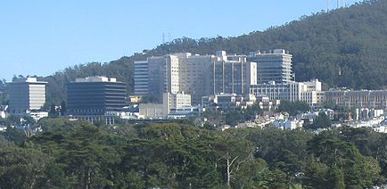

Rewriting Medicine
"Expanding WikiProject Medicine"
Gregory Bulpitt
Fall 2013
 Wikipedia is one of the most widely used sources of information in many different subjects, including medicine and human biology. However, Wikipedia is not usually taken as a credible source as articles can be written and edited by anyone. But a new course at the University of California, San Francisco (UCSF) called “Expanding WikiProject Medicine” could help integrate detailed medical knowledge with Wikipedia’s vast accessibility by having medical students write and edit articles for credit.
There are many Wikipedia articles that are unreliable because of a lack of references or inability on the part of the writers to properly interpret their sources. Medical students, though, are knowledgeable in and have access to an incredible amount of detailed information about diseases and medications. However, a problem that arises with these medical students is their ability to convey this information in a way that can be understood by a wide audience. Medical students often overuse medical jargon in conveying information because they are used to conveying information to other students and professors. This means that these young doctors will be unable to clearly communicate information to patients. As a result, new doctors must learn how to be more concise and simple in explanations to patients from their medical training alone.
Fourth year medical students at UCSF now have the option of taking this course, which is a collaboration with the nonprofit organization Wiki Project Med Foundation. The president of this organization, James Heilman, stated that, “We know that nearly all medical students use Wikipedia. However, we want nearly all medical students to contribute to Wikipedia.” Medical students in the course will be remotely editing lower quality medical articles from a selection of about eighty Wikipedia articles while monitored by the professors of the course.
This will help vastly in the abilities of these future doctors. According to Dr. Amin Azzam of the UCSF Medical School and instructor of the new course, “Writing and editing Wikipedia articles requires a similar skill set [to actual medical practice], and teaches our students how to write for a broader audience and communicate with patients using consumer-friendly language rather than doctor jargon.” Over the course, students will perform substantial research on each topic using in depth medical journal entries and other pieces of medical literature. They will then compose and edit articles such that they are complete, relevant, and accessible to the public.
Overall, what “Expanding Wikiproject
Medicine” will do is help new doctors have a greater understanding of
the body by requiring extensive research into important medical topics.
This course will also provide credible information on diseases to the
public and create doctors who are more connected with our internet
based society. Dr. Azzam stated that, “We as a profession have a corpus
of knowledge, and we owe it as a profession to educate the lay public”.
By having courses such as “Expanding WikiProject Medicine”, there
should also hopefully be an improvement in new doctors’ ability to
communicate with patients in a way that is both accurate and
understandable.
About the Author
Gregory Bulpitt is a first year undergraduate student at UC Berkeley interested in biomedical research. He is specifically interested in the field of regenerative medicine.